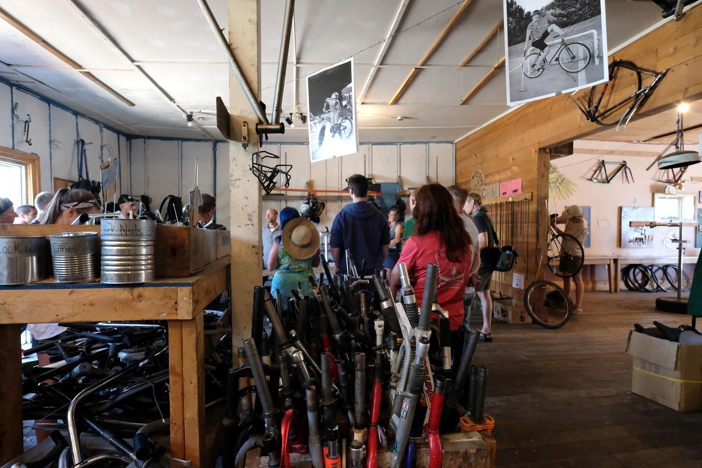

<!DOCTYPE html>
<html lang="en" dir="ltr">
  <head>
      <title> Free Cycles </title>
        <meta charset="utf-8">
    <meta name="description" content="Free cycles is a page where you can learn about what these people are trying to do. It is a place where poeple can donate their bike and other bike relted equipment. These bikes can be used other regular use or for decoration if they are not in a good shape. However, people who are interested in getting they have to be wiliing to put some work into the bike they choose. They only cost $30 but you have the option to pay with 1 hour of volonteer work. Their main goal is to make Montana a safer place for the enviroment and limit the car use."
   <meta name="author" content="Locke Hassett, Noah Silverman and Hannah Regan">
   <meta name="viewport" content="width=device-width, initial-scale=1.0">
    <style>
  </head>
  <body>

  </body>
  
</html>
